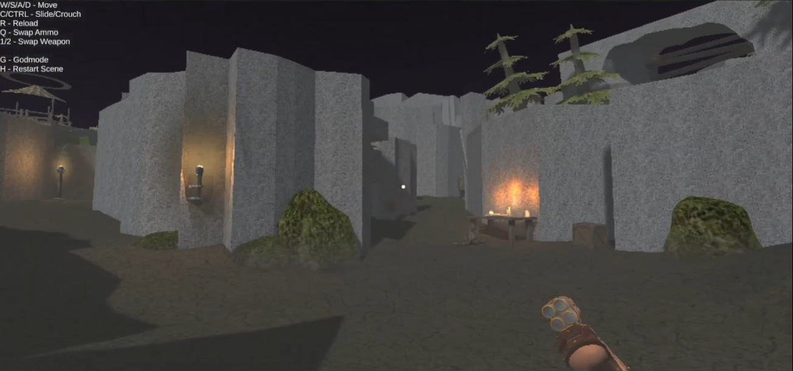
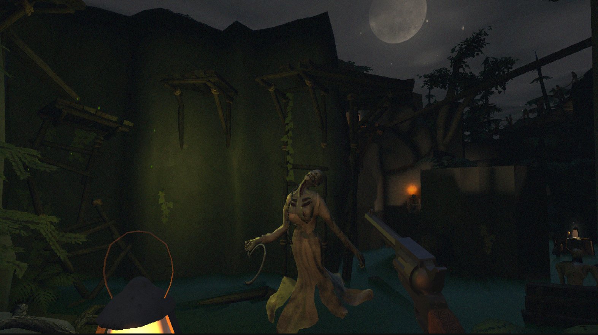
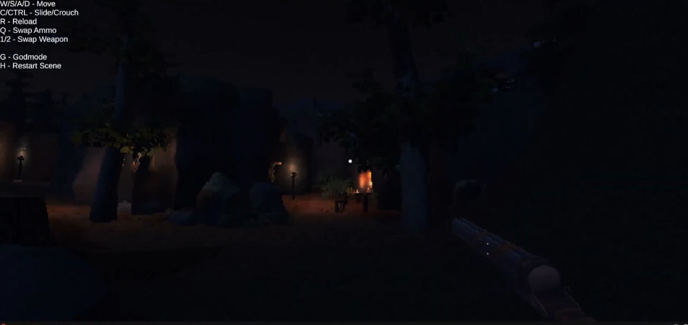
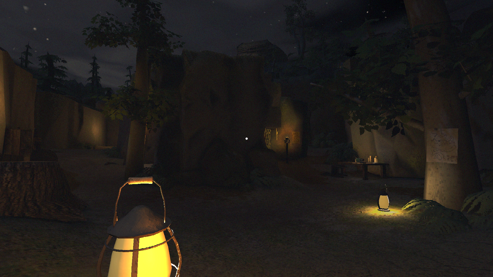

Stage 01
Initial Blockout
Establishing sightlines, spatial pacing, cover points, and multi-path navigation from floor plans.

An ongoing, ambitious student project focused on non-linear exploration, immersive environmental storytelling, and complete player agency.
As Lead Designer, my responsibility bridges creative vision, spatial architecture, and technical execution across iterative development sprints.
The central challenge was crafting levels for an immersive sim framework—granting players multiple paths and systemic solutions instead of linear corridors.

Establishing sightlines, spatial pacing, cover points, and multi-path navigation from floor plans.

Iterating on contrast and retro PS2 lighting aesthetics to guide player focus without intrusive UI.

Populating spaces with narrative props and interactive world details that reward thorough exploration.
Bridging the gap between code and design by taking programmer-built C# modules and turning them into functional, robust gameplay loops.
Video showcasing system integration in Unity: setting up prefabs, trigger interactions, and testing real-time level mechanics.
We exhibited *Pilgrim of Navia* publicly at the **Hello GameDev** conference, gathering invaluable live playtest feedback from attendees.
Building an immersive sim taught me to abandon linear script assumptions. Levels must be resilient to creative player choices, requiring clear readability and robust systemic fallback paths.
02 · Production Leadership & ScopingManaging a long-term student team reinforced the value of realistic milestone scoping, clear communication, and empowering team members while keeping the central creative vision intact.
03 · Technical Level Design & LightingLighting isn't just visual polish—it is a critical navigation tool. Mastering Unity light setups, volumetric fog, and prefab workflows allowed me to guide player movement naturally without relying on artificial markers.
04 · Public Playtesting & Feedback LoopExhibiting at *Hello GameDev* highlighted the importance of watching raw, unguided gameplay. Observing players tackle encounters revealed critical insights into spatial navigation and UI feedback that informed our next sprint iterations.